16. Database Add-on
The database Add-on adds SQL database support. It allows you to log process data values into a SQL database via the SQL Data Logger and it provides support for executing SQL queries.
16.1. SQL Database Logger
The SQL database logger enables logging of process data into an SQL database. The logger is not intended to record process data at very high sample rates but to log important process data over a longer period of time to document experiments or automated processes in the laboratory.
The SQL database logger supports various databases such as SQLite, MySQL or PostgreSQL. It has been tested with SQLite and MySQL databases.
16.1.1. SQL Logger Configuration Dialog
When the data logging plug-in has been loaded, the toolbar will display two additional buttons for the configuration of the SQL database logger ❶ and to start/stop the logging process ❷.
{kind=link}
Click the Configure SQL Logger button to open the configuration dialog. The following configuration dialog will be displayed:
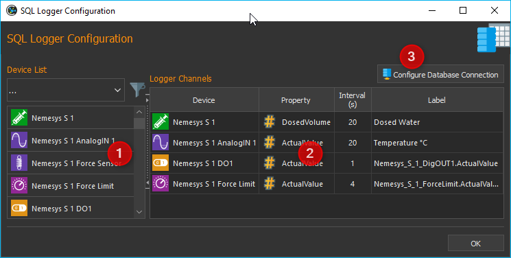
The configuration dialog contains the following elements:
Device List – displays all devices or modules that provided recordable data. The filter selector above is to limit the list to specific device types, e.g. valves.
Logger Channels – lists all channels that may be recorded by the logger.
Configure Database Connection – allows the user to configure the database settings such as database server and port.
The table Logger Channels shows the configuration of the logger.
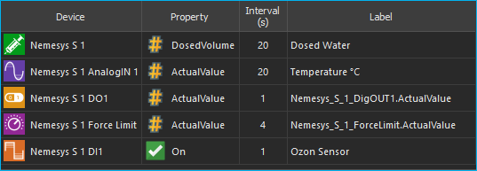
The table contains the following columns:
Device – contains the device name for which the data will be recorded and its device icon.
Property – this is the name of the device property/process data value that will be recorded. Its type (numeric or boolean) can be identified by the displayed icon.

Numeric value

Boolean value

Text value
Interval (s) - the sampling interval in seconds. The minimum sample time is 1 seconds.
Label – allows you to define a customized description for the selected channel.
16.1.2. Database Settings
To configure the database settings, click the Configure Database Connection button in the configuration dialog.
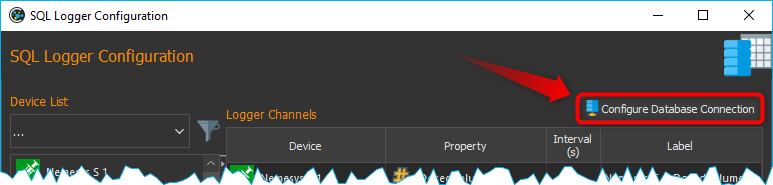
Intially the database logger uses a SQLite database in the current project folder for logging. The default SQLite database file is located in:
C:/Users/Public/Documents/QmixElements/Projects/MyProject/Log/ProcessDataDbLog.sqlite
With the following steps you can easily find the database file
from the application main menu select the menu item
the project folder will be opened in Windows file explorer
now open the Log folder
inside of the Log folder you should see the file
ProcessDataDbLog.sqlite
If you open the database configuration for the first time, you should see this default configuration:
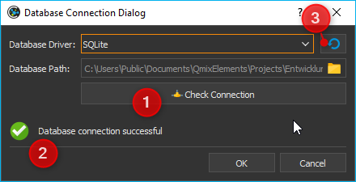
As soon as you click the Check Connection button ❶ you should see the green checkmark ❷. Whenever you want to restore these default settings, just click the Restore default settings button ❸.
If you use the SQLite database driver, you just need to select the database filename. If you select any other database driver, you need to provide additional database settings. The following picture shows the configurations settings for a MySQL database:
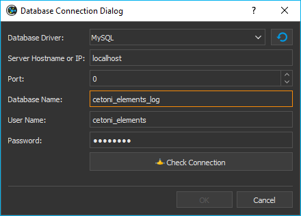
The following fields must be filled in:
Database Driver: the database driver that matches your database
Server Hostname or IP: the hostname or IP address of the server running the database. In this example the MySQL database runs locally and we use localhost
Port: the server port number to connect to database. In this example whe use localhost as hostname and therefore the port does not matter
Database Name: name of the database to use for data logging
User Name: database user to use for database access
Password: password to connect to database
As soon as you have properly entered all fields, the Check Connection button will be enabled. Click this button, to check your database connection. If this check succeeds, you can click OK to accept the settings.
Important
The Check Connection will be enabled only, if you have entered values in all required fields. The OK button will be enabled as soon as you have successfully checked your database connection.
16.1.3. SQL Logger Configuration
Step 1- Add Channels
Drag-and-Drop the device for which you want to log the data from the Device List ❶ into the Logger Channels ❷ list. The new channel will be inserted into the list at the desired position (see figure below).
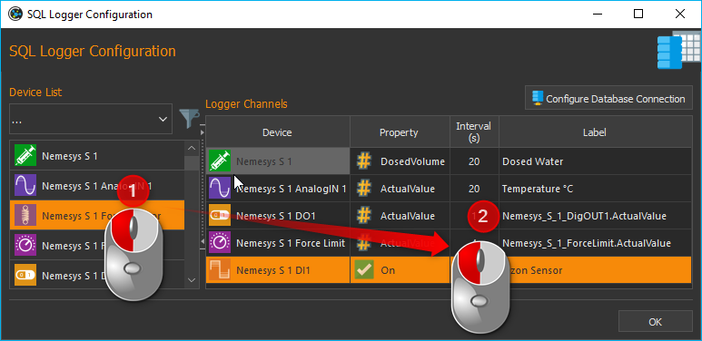
Tip
To simplify the device selection, the device list can be filtered according to device type.
Step 2- Select Device Property
In the Logger Channels list you now need to select the Property of the device that you want to record. For this, double-click into the respective field within the column Property and select the device property from the opening list (see figure below).
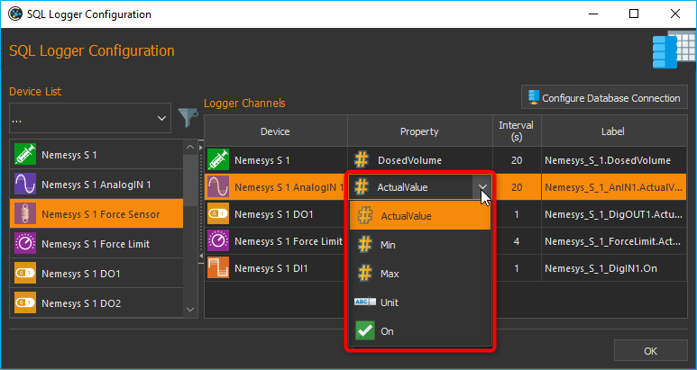
Step 3 – Configure Sample Interval
You can set a different sample interval for each individual logger channel. The minimum sample time is 1 second. To configure the log interval double-click into the respective field within the column Interval (s) and enter the interval time.
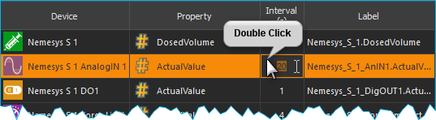
Important
Choose a log interval that is as large as possible and as small as necessary in order to minimize the amount of data that needs to be recorded and stored into the database.
Step 4 – Set Channel Label
In the column Label you can customize the description for each channel. You can use this column to add additional information, a meaningful name or a SI unit identifier.
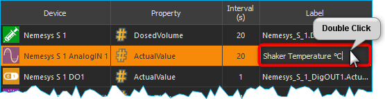
To do this, double-click into the respective table cell within the column Label and enter the label text.
Important
Upon choosing a new device property, a new channel description will be assigned automatically. That is, you should change the channel label only once the correct device property has been selected.
The device property and the label are separate columns in the SQL table
Deleting Channels
Highlight the desired channels using the mouse to delete one or more channels from the list, and then use either the Delete key or the item of the right-click context menu:

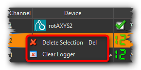
To delete the entire channel list, use the context menu item .
16.1.4. Database Schema
The SQL logger uses the following database schema to store its data:
{kind=link}
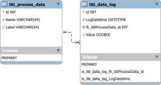
The schema consists of two tables. The first table is
the tbl_process_data for storage of process data information. The
following code is used to create this table:
CREATE TABLE IF NOT EXISTS `tbl_process_data` (
`id` INTEGER NOT NULL PRIMARY KEY AUTO_INCREMENT,
`Name` varchar(64) NOT NULL,
`Label` varchar(64)
);
The Name column stores the process data identifiers that are build from the
device name and the selected property. The Label column stores the value
entered in the Label column of the Logger Channels table. The
following picture shows the entered values in the Logger Channels table:
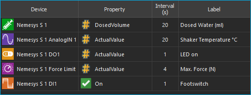
This configuration results in the following entries in the tbl_process_data
table (screenshot from MySQL workbench):
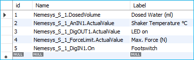
Entries will never get removed from the tbl_process_data table. If an
entry is missing, it will get added. Changing the label of a channel in the
Logger Channels table, may result in a new entry in the
tbl_process_data. The following example picture shows this:
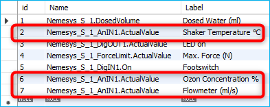
The analog input Nemesys_S_1_AnIN1 property
ActualValue (process data identifier Nemesys_S_1_AnIN1.ActualValue)
was used to log different physical quantities in various experiments:
the temperature of a shaker unit in °C
the ozon concentration in %
and the value of a flowmeter in ml/s
This shows, that a change of the Label value results in different
database entries.
The second table is the tbl_data_log which is used to store the actual
values read from the device properties. This table is created with the
following SQL code:
CREATE TABLE `tbl_data_log` (
`id` INTEGER NOT NULL PRIMARY KEY AUTO_INCREMENT,
`LogDatetime` DATETIME NOT NULL,
`fk_tblProcessData_id` int NOT NULL,
`Value` double NULL,
FOREIGN KEY (fk_tblProcessData_id) REFERENCES `tbl_process_data` (`id`)
);
CREATE INDEX `ix_tbl_data_log_fk_tblProcessData_id` ON `tbl_data_log` (`fk_tblProcessData_id` ASC);
CREATE INDEX `ix_tbl_data_log_LogDatetime` ON `tbl_data_log` (`LogDatetime` ASC);
The code creates the following table layout:
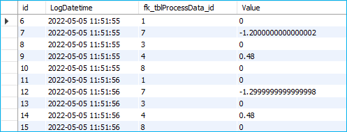
LogDatetime: stores the date and time when the value was logged
fk_tblProcessDataId: is a foreign key into the
tbl_process_datatable to identify the process data that has been loggedValue: the actual logged value
You can use SQL query language to get the logged data that you need. The following example SQL statement shows, how to get all logged values from the process data labeled with Flowmeter (ml/s):
SELECT b.LogDatetime, a.Name, a.Label, b.Value
FROM tbl_data_log AS b
INNER JOIN tbl_process_data as a ON (b.fk_tblProcessData_id=a.id)
WHERE a.Label LIKE '%Flow%'
This is the resulting table from the given SQL statement:
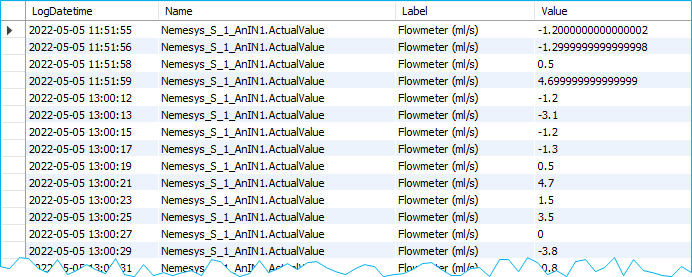
16.2. Script Functions
To automate the data logging or to synchronize data logging with other processes, the SQL database logger can be started and stopped using script functions. The corresponding functions can be found in the Logging category in the list of the available script functions.
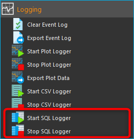
16.2.1. Start SQL Logger
{kind=link}
This function is used to start the SQL logger with the currently configured settings and channels.
16.2.2. Stop SQL Logger
{kind=link}
This function stops logging into SQL database.
16.2.3. Trigger SQL Data Logging
{kind=link}
This function triggers the immediate logging of all channels of the SQL logger. Normally the data will be logged with the configured interval. If you would like to force the immediate logging of all channels, for example if you would like to capture the current state of all channels if a certain event occurs, then you can use this function.
16.3. JavaScript Database Access
The Database Add-on provides some functionality, to access SQL databases from
JavaScript code. If you enter the help()
command in th JavaScript Console, you should see the database objects
such as QSqlDatabase or QSqlQuery.
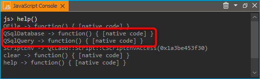
16.3.1. Example 1 - SQLite Database Query
The following example code shows, how to use the database objects in a JavaScript function to execute a SQL query for an SQLite database:
function main() {
db = new QSqlDatabase();
db.createConnection("QSQLITE", "JsScript");
path = ScriptEnv.projectPath(ScriptEnv.LocationLog) + "/ProcessDataDbLog.sqlite";
db.setDatabaseName(path);
db.open();
q = db.createQuery();
result = q.exec("SELECT * FROM tbl_process_dat");
if (!result) {
throw new Error(q.lastError());
}
while (q.next()) {
print(q.recordValues());
}
}
16.3.2. Example 2 - Create SQLite Database Schema
The following example shows, how to create the following database schema in an SQLite database uns JavaScript code:
{kind=link}
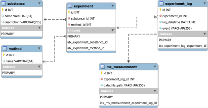
function createSchema() {
db = new QSqlDatabase();
if (!db.createConnection("QSQLITE", "JsConsole")) {
throw new Error(db.lastError);
}
db.setDatabaseName("C:/temp/test3.sqlite");
if (!db.open()) {
throw new Error(db.lastError());
}
q = db.createQuery();
result = q.exec("CREATE TABLE IF NOT EXISTS substance ( " +
"id INTEGER NOT NULL PRIMARY KEY AUTOINCREMENT, " +
"name TEXT, " +
"description TEXT)");
if (!result) {
throw new Error(q.lastError());
}
result = q.exec("CREATE TABLE IF NOT EXISTS method (" +
"id INTEGER NOT NULL PRIMARY KEY AUTOINCREMENT, " +
"name TEXT)");
if (!result) {
throw new Error(q.lastError());
}
result = q.exec("CREATE TABLE IF NOT EXISTS experiment (" +
"id INTEGER NOT NULL PRIMARY KEY AUTOINCREMENT, " +
"substance_id INTEGER, " +
"method_id INTEGER, " +
"FOREIGN KEY (substance_id) REFERENCES substance (id), " +
"FOREIGN KEY (method_id) REFERENCES method (id))");
if (!result) {
throw new Error(q.lastError());
}
result = q.exec("CREATE TABLE IF NOT EXISTS experiment_log (" +
"id INTEGER NOT NULL PRIMARY KEY AUTOINCREMENT, " +
"log_datatime TIMESTAMP, " +
"event TEXT, " +
"experiment_id INTEGER, " +
"FOREIGN KEY (experiment_id) REFERENCES experiment (id))");
if (!result) {
throw new Error(q.lastError());
}
result = q.exec("CREATE TABLE IF NOT EXISTS ms_measurement (" +
"id INTEGER NOT NULL PRIMARY KEY AUTOINCREMENT, " +
"data_file_path TEXT, " +
"FOREIGN KEY (id) REFERENCES experiment_log (id))");
if (!result) {
throw new Error(q.lastError());
}
return "";
}
16.4. JavaScript API Reference
16.4.1. QSqlDatabase
-
class DbPlugin::CScriptQSqlDatabase : public QObject
Wrapper for QSQLDatabase object to use it in JavaScript.
The following code shows, how to open a database connection in JavaScript and how to execute a simple query
db = new QSqlDatabase(); db.createConnection("QSQLITE", "JsScript"); db.setDatabaseName("C:/Users/Public/Documents/QmixElements/Projects/Entwicklung/Log/ProcessDataDbLog.sqlite"); db.open(); q = db.executeQuery("SELECT * FROM tbl_process_data"); while (q.next()) { print(q.recordValues()); }
Public Functions
-
bool createConnection(const QString &type, const QString &connectionName)
-
QObject *createQuery(const QString &query = QString())
-
CScriptQSqlDatabase()
-
QString databaseName() const
-
QStringList drivers() const
-
QObject *executeQuery(const QString &query)
-
QStringList fields(const QString &tablename) const
-
QString hostName() const
-
bool isOpen() const
-
bool isValid() const
-
QString lastError() const
-
bool open()
-
QString password() const
-
int port() const
-
QSqlDatabase qSqlDatabase()
Returns the internal database object.
-
void setDatabaseName(const QString &name)
-
void setHostName(const QString &host)
-
void setPassword(const QString &password)
-
void setPort(int port)
-
bool setUrl(const QString &Url)
-
void setUserName(const QString &name)
-
QStringList tables() const
-
QString url() const
-
QString userName() const
-
virtual ~CScriptQSqlDatabase()
-
bool createConnection(const QString &type, const QString &connectionName)
16.4.2. QSqlQuery
-
class DbPlugin::CScriptQSqlQuery : public QObject
Wrapper for QSqlQuery to use it in JavaScript.
There are several options how to execute a query. The first option is, to call the executeQuery() function of the database object:
q = db.executeQuery("SELECT * FROM tbl_process_data");
The second option is, to create the query via the database object and to execute it later:
q = db.createQuery("SELECT * FROM tbl_process_data"); q.exec();
or you create the query object and the pass the actual query to the executeQuery() function
q = db.createQuery(); q.exec("SELECT * FROM tbl_process_data");
If you want to insert data into the database, then you can build the complete query string with JavaScript or you can use the bindValues() function with placeholders like in the code below:
q = db.createQuery("INSERT INTO person (id, forename, surename) VALUES (?, ?, ?)"); q.bindValues([1001, "Bart", "Simpson"]); q.exec();
Public Functions
-
void bindValues(const QVariantList &Values)
-
CScriptQSqlQuery(const QSqlQuery &Query)
-
CScriptQSqlQuery()
-
bool exec(const QString &query = QString())
-
QString lastError() const
-
bool next()
-
bool prepare(const QString &query)
-
QVariantMap record() const
-
QVariantList recordValues() const
-
virtual ~CScriptQSqlQuery()
-
void bindValues(const QVariantList &Values)